개요
진출 차량이 집중되면 진출로와 연결된 차로만 정체되고 나머지 차로는 정체되지 않는 경우가 있다. 이때 진출 지점 직전에 도착한 차량은 대기열 후미에 합류할 수 없으므로 대기열 중간에 진입해야 한다.
진입 성공 여부는 후행차의 반응에 따라 달라지므로, AV는 후행차의 감속 및 차간 간격 변화를 관측하여 진입 여부를 판단해야 한다.
| 목표 | 내용 |
|---|---|
| 진출 성공 | 진출부 도달 전 정체 차로 진입 완료 |
| 충돌 방지 | 진입이 어려운 경우의 진입 중단 및 원래 차로 복귀 |
| 피해 최소화 | 진입으로 인해 순서가 밀리는 후행차 수의 최소화 |
실제 도로
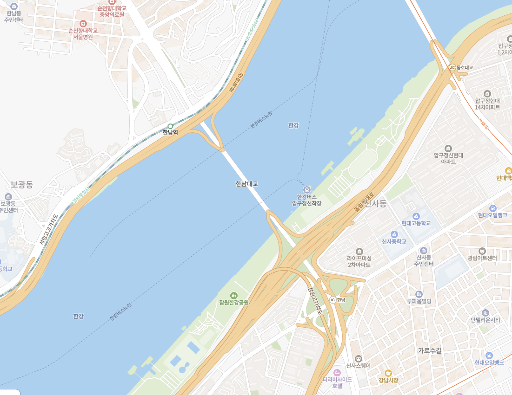
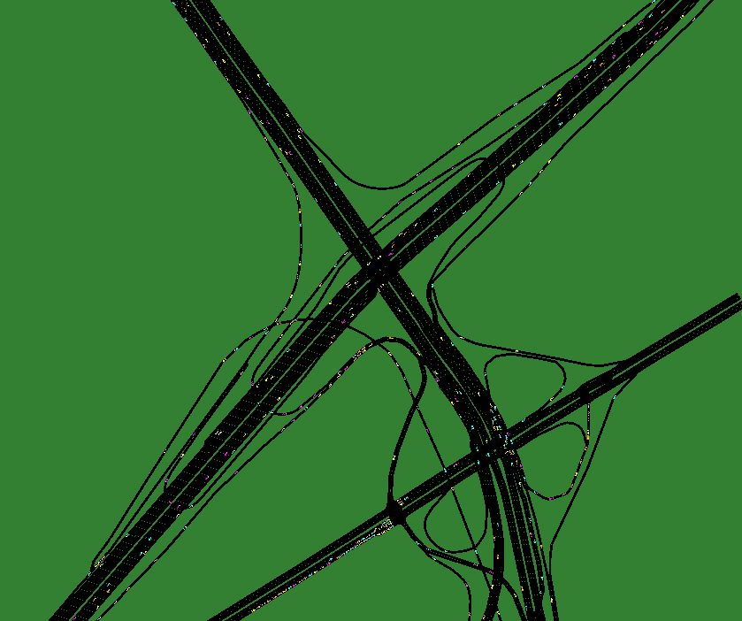
도로 특징
| 특징 | 내용 |
|---|---|
| 입체 교차 | 올림픽대로, 한남대로 및 경부고속도로가 서로 다른 높이에서 교차 |
| 진입·진출로 | 세 도로 간 연결 램프로 인해 합류, 분기 및 엇갈림 구간이 짧은 거리 내에 집중 |
| 정체 편중 | 직진 차로는 원활하나 진출 차로는 정체 |
SUMO 환경
1. 고저차
실제 도로 구조를 유지하면서 도로별 높이를 다르게 설정하였다. SUMO는 차량 간 상호작용을 차선 및 교차로 단위로 계산하므로, 서로 다른 도로를 주행하는 차량 간에는 상호작용이 없다.
| 도로 | 높이 |
|---|---|
| 올림픽대로 | 0 m |
| 한남대로, 경부고속도로 | 10 m |
| 진출입 램프 | 0~10 m |
| 올림픽대로 ∩ 램프 | 5 m |
| 한남대로 ∩ 경부고속도로 | 16 m |
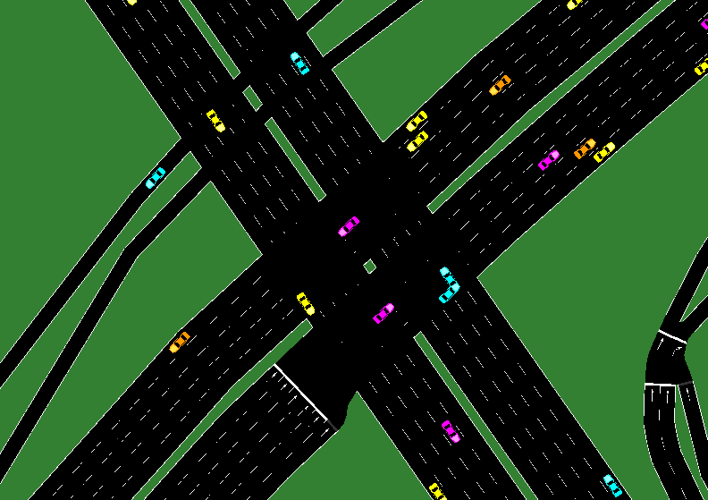
도로망은 env/osm_road.py에서 OSM 지도의 대상 도로를 추출하고 높이를 부여한 뒤 netconvert로 생성하였다. 생성된 도로망은 도로 구간 61개(총 21.7 km), 신호 교차로 7곳 및 경로 10개로 구성된다.
2. 진입·진출로
램프 배치는 실제 도로와 동일하게 구성하였다.
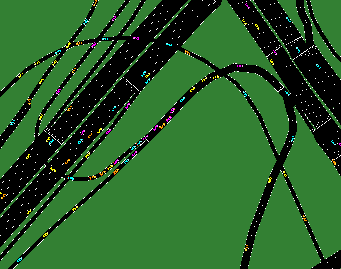
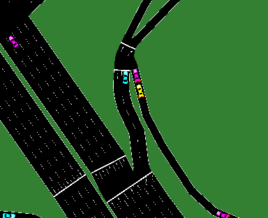
3. 정체 편중
실제 교통 분포에 맞추어 일반 차량을 특정 경로에 편중 배치하였다.
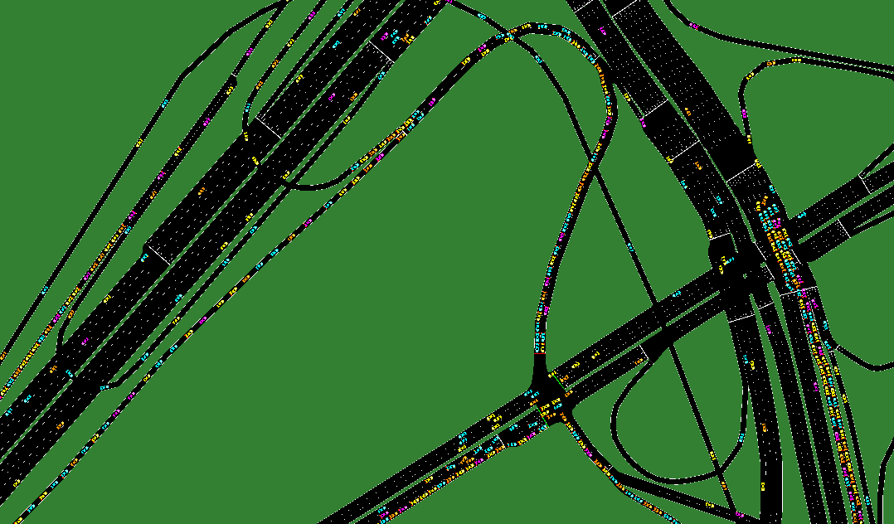
시나리오
AV의 경로는 아래 6개 중 하나로 에피소드마다 무작위로 지정된다. 그림에서 흰 원은 출발 지점, 파란 원은 도착 지점이며, 제한 시간은 일반 차량의 통과 시간을 기준으로 경로별로 설정하였다.
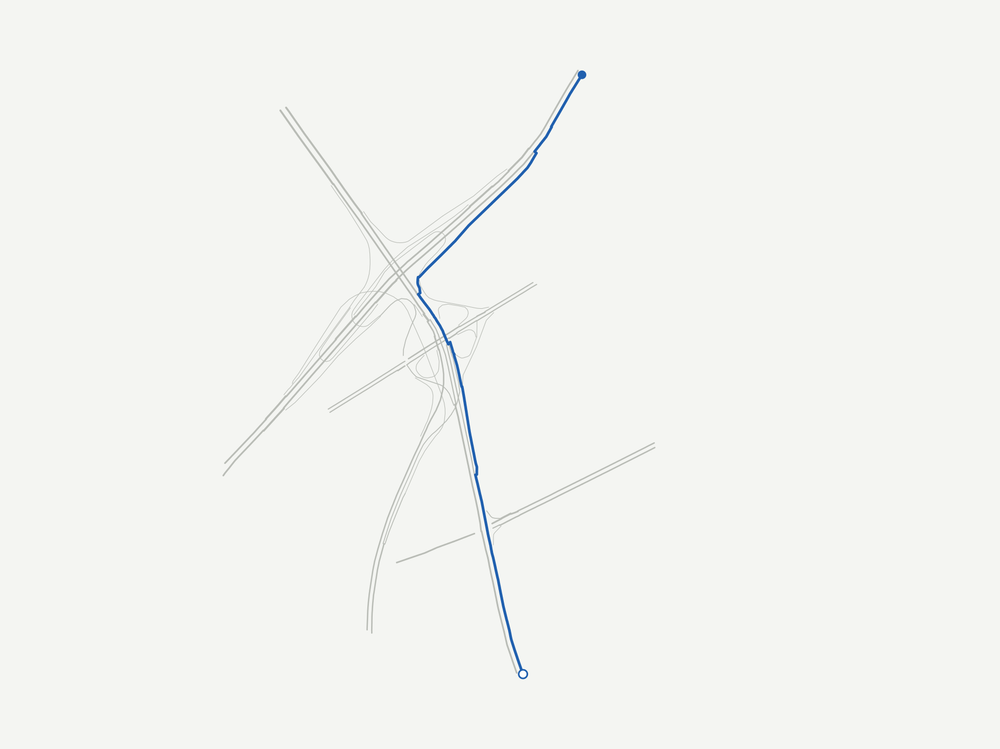
신호 교차로 2곳을 지난 뒤 연결로를 거쳐 올림픽대로에 합류한다.
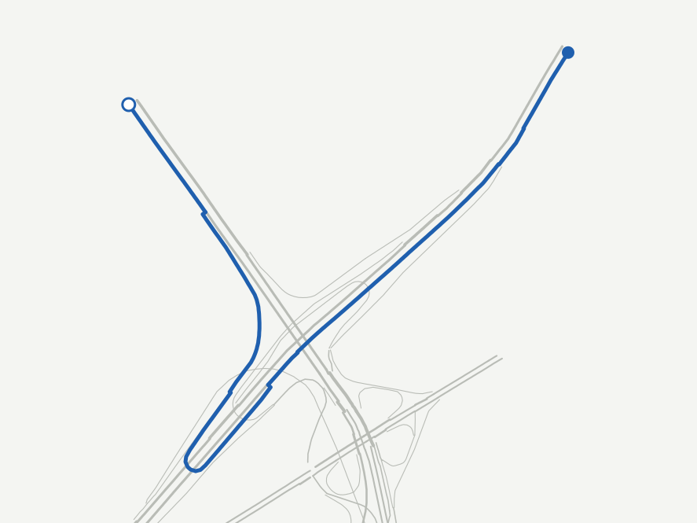
한남대로에서 1차로 램프로 진출하여 올림픽대로에 합류한다.
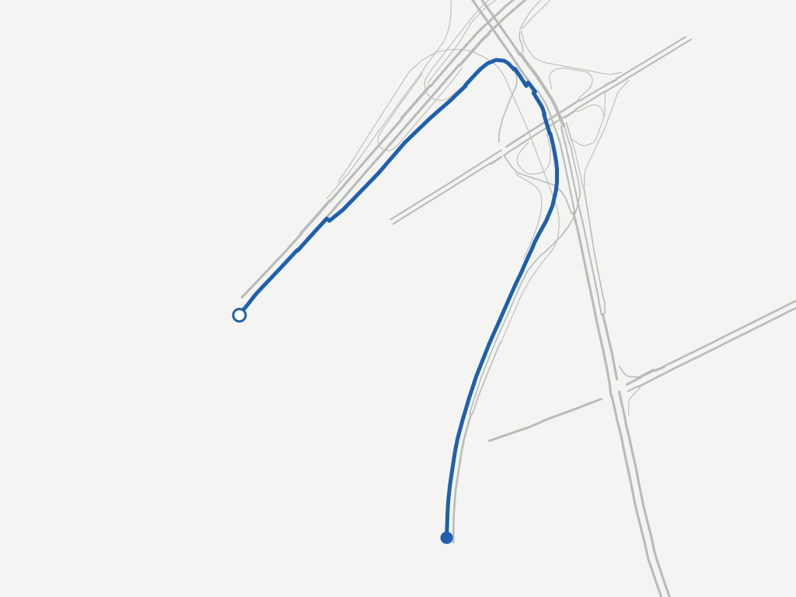
올림픽대로에서 1차로 연결로로 진출한 뒤 강남대로를 거쳐 경부고속도로에 합류한다.
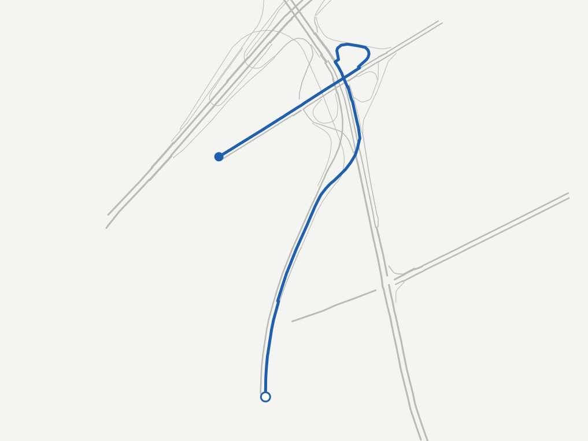
강남대로 최우측 차로의 대기열에 진입한 뒤 압구정로를 거쳐 잠원로로 진출한다.
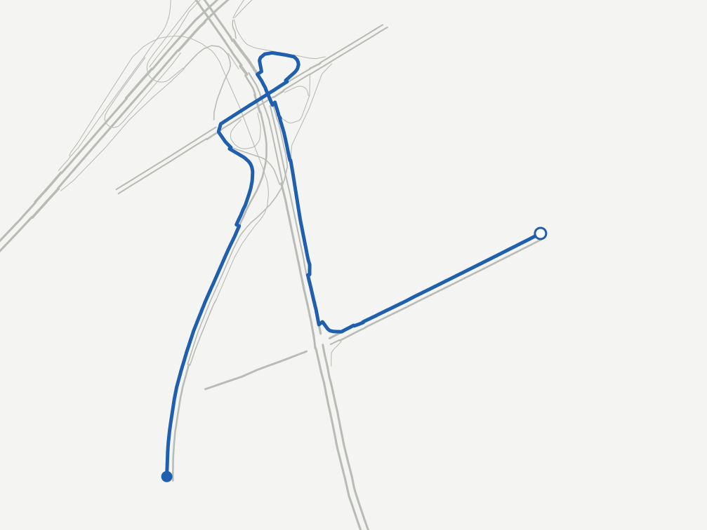
신호 교차로 2곳과 1차로 구간 3곳을 지나는 가장 긴 경로이다.
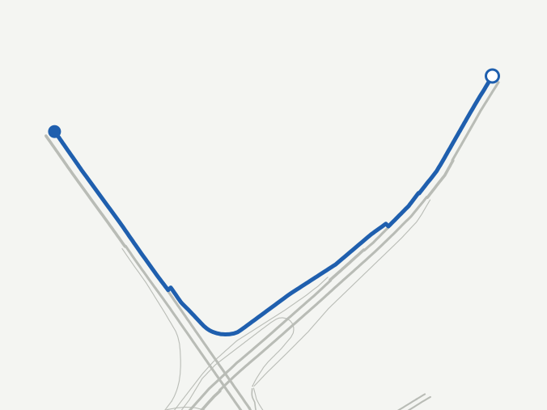
올림픽대로에서 1차로 램프로 진출하여 한남대로에 합류하는 가장 짧은 경로이다.
| 시나리오 | 경로 | 길이 | 신호 교차로 | 1차로 구간 | 제한 시간 |
|---|---|---|---|---|---|
| S1 | 강남대로 북행 → 올림픽대로 동행 | 2,097 m | 2 | 2 | 1,000 s |
| S2 | 한남대로 → 올림픽대로 동행 | 2,251 m | 0 | 1 | 360 s |
| S3 | 올림픽대로 동행 → 경부고속도로 | 1,981 m | 0 | 2 | 1,770 s |
| S4 | 경부고속도로 북행 → 잠원로 | 1,807 m | 1 | 1 | 560 s |
| S5 | 도산대로 서행 → 잠원로 → 경부고속도로 | 2,525 m | 2 | 3 | 3,230 s |
| S6 | 올림픽대로 서행 → 한남대로 | 1,426 m | 0 | 1 | 200 s |
일반 차량
| 설정 | 내용 | 목적 |
|---|---|---|
정지 간격 minGap | 1.0~1.5 m 범위를 6단계로 나누어 차량별로 지정 | 정체 시 실제 차간 간격 재현 |
비상 제동 emergencyDecel | 9.0 m/s² → 7.5 m/s² | 정지 불가능한 간격으로 진입 시 충돌 발생 |
반응 지연 actionStepLength | 1.0 s | 후행차의 반응 지연 재현 |
| 추종 모델 | Krauss, IDM, EIDM 및 ACC 혼합 | 차량별 가감속 특성 차이 재현 |
끼어들기 알고리즘
차선변경 모델
차선변경 기동
- 트리거. 정책이 좌측, 유지 및 우측 중 하나를 선택한다. 기동 중에는 이 값이 반영되지 않는다.
- 차선 경계 진입. 환경이 목표 차선 방향으로 최대 횡가속도를 적용하여 차체를 차선 경계에 걸치게 한다.
- 진입, 대기 및 복귀. 이후 정책이 횡가속도를 연속값으로 출력하여 진입, 경계 위 대기 및 원래 차선 복귀를 결정한다.
- 종료. 차체 전체가 한 차선 내에 위치하면 기동이 종료되며, 그 차선이 목표 차선이면 완료, 출발 차선이면 취소로 처리된다. 차선 경계에 걸친 상태로 교차로에 진입한 경우에도 취소로 처리된다.
최대 횡속도(maxSpeedLat) 및 횡가속도(lcAccelLat)를 낮추어 차선 1개 변경에 수 초가 소요되도록 하였다.
학습 방법
담당 팀원 검토 필요
학습 코드
| 파일 | 내용 |
|---|---|
collect_pomdp_data.py | 주행 데이터 수집 |
train_bc.py | BC (Behavior Cloning) 학습 |
train.py | PPO 강화학습 |
관측, 행동 및 보상
| 구분 | 내용 |
|---|---|
| 관측 | 46차원. 기존 31차원(주변 차량 상대거리 및 속도 등)에 인접 차량 횡거리 및 횡속도, AV 횡위치, 후행차 가속도, 경로 유지에 필요한 차선변경 수 및 신호 상태 등을 추가 |
| 행동 | 가감속 및 횡가속도는 연속값(Normal), 차선변경 트리거는 3개 범주(Categorical)로 출력하는 hybrid 정책 |
| 커리큘럼 | 학습 초기 100,000 스텝 동안 일반 차량의 비상 제동 한계를 9.0 m/s²에서 7.5 m/s²로 선형 감소 |
| 보상 항목 | 설명 |
|---|---|
| 진행 거리 | 스텝당 이동 거리에 비례 |
| 완주 | 경로 끝 도달 시 보상 후 종료 |
| 충돌 및 신호 위반 | 큰 벌점 후 종료 |
| 출구 놓침 | 큰 벌점 후 종료 |
| 안전거리 | 속도별 최소 차간거리(UN R157)보다 가까운 경우 위반 정도에 비례하여 감점 |
| 저속 | 전방 공간이 확보된 상태에서 기준 속도보다 느린 경우 감점 |
| 차선 걸침 | 차선 경계를 넘은 폭에 비례하여 감점. 걸친 상태로 교차로 진입 시 추가 감점 |
| 대기열 앞지르기 | AV 진입으로 순서가 밀린 후행차 수에 비례하여 감점 |
학습 결과
주행 영상
<video src="assets/demo.mp4" controls>로 교체주행 성능
| 정책 | 완주율 | 충돌률 | 출구 놓침률 | 평균 주행 시간 (s) | 진입 소요 시간 (s) |
|---|---|---|---|---|---|
| BC | — | — | — | — | — |
| PPO | — | — | — | — | — |
수집 데이터
데이터 수집 시 아래 항목이 기록된다. 수집 에피소드 수, 파일 형식 및 분석 결과 추가
| 항목 | 설명 |
|---|---|
| 에피소드 결과 | 종료 유형(완주, 충돌, 출구 놓침, 신호 위반) |
| 관측 및 행동 | 스텝별 부분 관측, 행동, 보상 및 종료 여부 |
| 시뮬레이터 상태 | 정책 입력에 포함되지 않는 SUMO 내부 상태 (검증 및 분석용) |
문제 및 해결
repair_patch)로 차선 연결을 보정하였다.